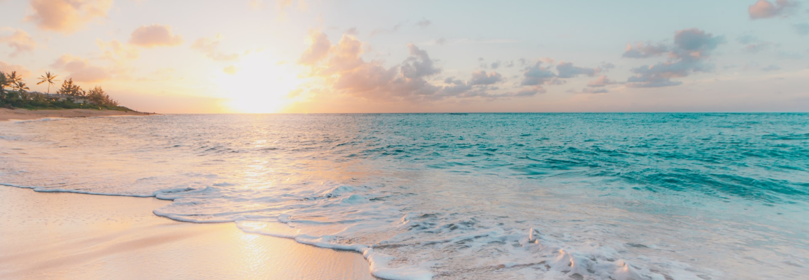
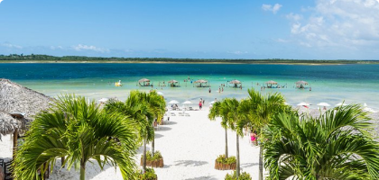
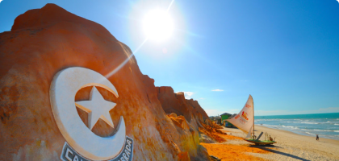
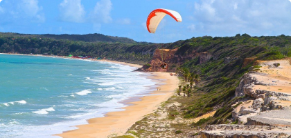

Venha conhecer as melhores praias do Brasil!

Jericoacoara
Eleita em 1994 pelo The Washington Post uma das dez praias mais
bonitas do planeta.

Canoa Quebrada
A sua paisagem é caracterizada por dunas e falésias avermelhadas
de até trinta metros acima do nível do mar.

Pipa
É o principal balneário do Litoral Sul do estado, que inclui ainda
praias como Ponta do Madeiro e Praia do Amor.
BORA VIAJAR?